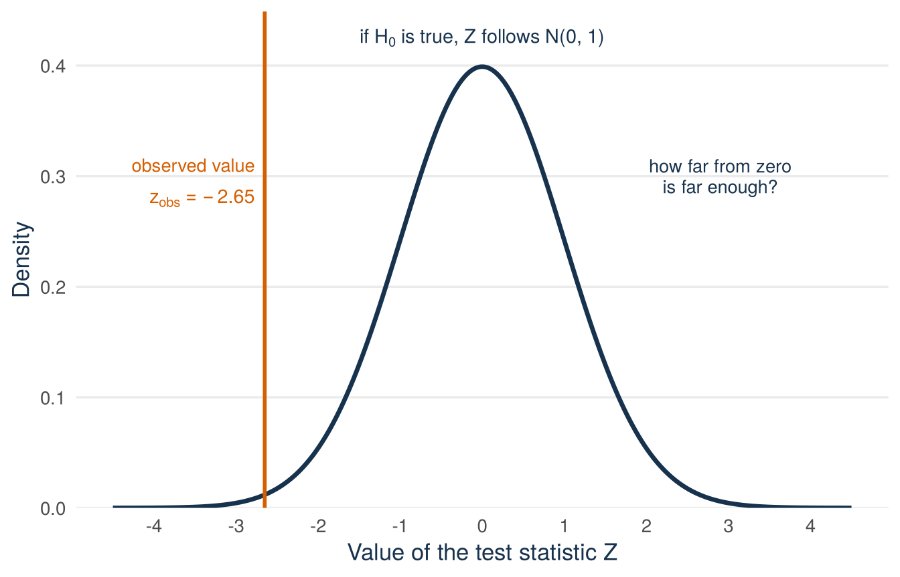

Lecture 9: The t distribution and confidence intervals
By the end of Lecture 9, you can
explain why an estimated standard deviation leads to the t distribution
construct and interpret a confidence interval for a mean or a proportion
choose a sample size for a target margin of error
state the hypotheses of a two-sided test and calculate its test statistic
Driving question
Suppose an advisor tells founders that pitches typically offer investors about 15% equity. Our data can check such a benchmark, if we take the variation between samples into account.
Is the mean equity offered (equity_offered_pct) across all recorded Shark Tank pitches really different from 15%?
Before class
Do all the preparation below before class.
Video preparation Watch Confidence Intervals, Confidence Intervals When the Variance Is Unknown, and Introduction to Hypothesis Testing. Focus on three points: what happens to an interval when the sample is drawn again and again, why a t distribution takes the place of the normal distribution, and which value a test compares the estimate with. The videos use \(M_n\) for the sample mean, where this book uses \(\bar X\), and \(\hat\Theta\) for an estimator. All links are also listed in the External Video Guide. The videos explain key ideas in another way and can use a different notation. The lecture material and its notation always come first.
Shark Tank dataWarm up. A random sample of \(n=100\) pitches has a mean equity offered (equity_offered_pct) of \(\bar x=12.76\)% and a sample SD of \(s=7.71\) percentage points.
Calculate the standard error of the sample mean.
Between which two values does the central 95% of the standard normal distribution lie?
Check your preparation
The standard error is \(s/\sqrt n=7.71/\sqrt{100}=0.771\) percentage points (Lecture 8).
Between \(-1.96\) and \(1.96\), because \(z_{0.975}=1.96\) (Lecture 6).
A confidence interval is built from these pieces: an estimate, its standard error, and a quantile of a known distribution.
Predict. Answer this question before you come to class: in a real sample, the unknown population SD \(\sigma\) must be replaced by the sample SD \(S\). Does this replacement make a 95% interval wider or narrower, or does it leave the width unchanged? Choose one answer. You find the correct answer in the lecture material.
Lecture 8 gave a sample mean, which estimates the population mean, and its standard error. This lecture turns those two numbers into a confidence interval. That is an interval built by a method that captures the population parameter in a chosen share of all samples, for example 95%. The lecture ends with a test statistic, which measures how far an estimate lies from a proposed value of the parameter. Lecture 10 turns the test statistic into a decision.
Shark Tank data Suppose an advisor tells you that founders on the show offer about 15% of their company. You have looked at 100 pitches, chosen by chance, and their average equity offered (equity_offered_pct) is 12.76%. Is the advisor wrong? Or is 12.76 simply what 100 pitches can give by chance when the true average is 15? R gives an answer with one command:
One Sample t-test
data: pitch_sample$equity_offered_pct
t = -2.9061, df = 99, p-value = 0.004515
alternative hypothesis: true mean is not equal to 15
95 percent confidence interval:
11.23059 14.28941
sample estimates:
mean of x
12.76
R prints the mean of the sample, 12.76, a t value of \(-2.91\) with 99 degrees of freedom, a p-value of 0.0045, and an interval from 11.23 to 14.29. An AI assistant would give you the same output, together with a sentence that sounds sure about what it means. To check that sentence, you need to know where the interval comes from, why it uses a t distribution with 99 degrees of freedom, and what the t value and the p-value say. This lecture explains the interval and sets up the test. Lecture 10 explains the decision and the p-value.
The price of estimating σ: the t distribution
Lecture 8 gave the standardised sample mean
\[
Z=\frac{\bar X-\mu}{\sigma/\sqrt n}.
\]
Its distribution is known in two situations. If the population is normal, \(Z\) is exactly standard normal for every sample size (Lecture 8). If the population is not normal but \(n\) is large, \(Z\) is approximately standard normal by the central limit theorem (CLT). In both situations the distribution of \(Z\) is known, although \(\mu\) is not. So we can use \(Z\) to draw conclusions about \(\mu\). This is the step from sample statistics to population parameters (Lecture 7).
But \(Z\) also contains the population SD \(\sigma\), and in a real study nobody knows \(\sigma\). The only replacement we have is the sample SD \(S\). This gives
\[
T=\frac{\bar X-\mu}{S/\sqrt n}.
\]
Why \(T\) has heavier tails than \(Z\)
\(S\) is itself a random variable. It changes from sample to sample, and in a small sample it can be far from \(\sigma\). In a sample where \(S\) comes out larger than \(\sigma\), the denominator is too large and \(T\) is pulled towards zero. In a sample where \(S\) comes out smaller than \(\sigma\), the denominator is too small and \(T\) is pushed away from zero. When \(S\) is far below \(\sigma\), the push is large. The two effects do not cancel. A moderate value of \(Z\) becomes an extreme value of \(T\) whenever \(S\) is much smaller than \(\sigma\). So \(T\) has two sources of variation, \(\bar X\) and \(S\). Its distribution is still symmetric around zero, but it puts more probability far from zero. This is what “heavier tails” means.
The exact result for a normal population
If the population is normal, the distribution of \(T\) is known exactly, for every \(n\):
t distributions and degrees of freedom. The t distributions are a family of distributions. There is one member for each value of a single number, the degrees of freedom (\(df=1,2,3,\ldots\)). Every member is symmetric around zero and has heavier tails than the standard normal. The smaller the degrees of freedom, the heavier the tails. As the degrees of freedom grow, the member approaches \(N(0,1)\). For a random sample of size \(n\) from a normal population, \(T\) follows the member with \(df=n-1\).
Figure 11.1: The t distribution for 4 and 10 degrees of freedom against the standard normal. All three are symmetric around zero. The t curves put more probability in the tails, most visibly at low degrees of freedom.
Figure 11.1 shows two members of the family and the standard normal. With \(df=4\) the tails are clearly heavier. With \(df=10\) the difference is much smaller. A probability or a quantile for \(T\) always comes from the member with \(df=n-1\). A different sample size means a different curve.
The difference is most visible in the tails. The central 95% of the standard normal lies between \(-1.96\) and \(1.96\) (Lecture 6). A t curve must reach further out to include its central 95%. The point where the central 95% ends is the 0.975 quantile of the t distribution. We write it \(t_{0.975,\,df}\) and compute it in R with qt(0.975, df). This number is called the 95% critical value. For small \(df\) it is clearly larger than 1.96. Other levels work in the same way: the central 90% ends at the 0.95 quantile \(t_{0.95,\,df}\), and the central 99% ends at the 0.995 quantile \(t_{0.995,\,df}\).
Why \(n-1\)
The degrees of freedom measure how precisely \(S\) estimates \(\sigma\). With few degrees of freedom, \(S\) is imprecise and the tails are heavy. With many degrees of freedom, \(S\) is close to \(\sigma\) in almost every sample, and \(T\) behaves like \(Z\). The number is \(n-1\) and not \(n\) for the reason given in Lecture 7. Once \(\bar X\) is fixed, the \(n\) deviations \(X_i-\bar X\) must sum to zero. So only \(n-1\) of them can vary freely, and \(S\) is built from those \(n-1\) free deviations.
The rule of this course
What if the population is not normal? For a large sample, \(T\) is then approximately standard normal, so a z value would be enough. The optional box at the end of this section shows why. The t value is still a safe choice, because \(t_{n-1}\) comes closer and closer to \(N(0,1)\) as \(n\) grows. At \(n\approx 30\) the two curves are already almost the same. At \(n=100\) the 95% critical values are \(t_{0.975,\,99}=1.984\) and \(z_{0.975}=1.96\). So using the t distribution costs almost nothing when \(n\) is large, and it is exactly right when the population is normal. So this course uses one rule: \(\sigma\) unknown means t with \(n-1\) degrees of freedom, whatever the sample size.
Population normal
Population not normal, \(n\) large
\(\sigma\) known
\(Z\sim N(0,1)\) exactly, for every \(n\)
\(Z\ \dot\sim\ N(0,1)\) by the CLT
\(\sigma\) unknown
\(T\sim t_{n-1}\) exactly, for every \(n\)
\(T\ \dot\sim\ N(0,1)\), and \(t_{n-1}\) is almost the same, so we use \(t_{n-1}\)
The table shows the distribution of the standardised sample mean in each situation. One case is missing: a small sample from a population that is not normal. No result covers it. This is one reason to check the conditions before calculating, as a later section of this lecture does.
Check: which is larger, \(t_{0.975,11}\) or \(t_{0.975,99}\)?
\(t_{0.975,\,11}=2.201\) is larger than \(t_{0.975,\,99}=1.984\). With only 11 degrees of freedom, \(S\) is an imprecise estimate of \(\sigma\), so the t distribution has heavier tails and its 0.975 quantile lies further from zero. At \(df=99\) the critical value is already close to the normal 1.96. With a large sample, the t and normal answers are almost the same. Verify in R: qt(0.975, df = 11) and qt(0.975, df = 99).
If \(S\) were equal to \(\sigma\), the factor would be 1 and \(T\) would be \(Z\). But \(S\) is random, so the factor \(\sigma/S\) is random too. When \(S\) is larger than \(\sigma\), the factor is below 1 and \(T\) is closer to zero than \(Z\). When \(S\) is smaller than \(\sigma\), the factor is above 1 and \(T\) is further from zero than \(Z\). Everything about \(T\) follows from how far this factor moves away from 1.
The factor also explains the large-sample case. If the population is not normal, \(Z\) is approximately normal only for large \(n\). The same large \(n\) makes \(S\) a precise estimate of \(\sigma\), because \(S\) is a consistent estimator: with a larger and larger sample it comes closer and closer to \(\sigma\) (Lecture 8). The factor \(\sigma/S\) is then close to 1 in almost every sample, and
Replacing \(\sigma\) by a consistent estimate does not change the distribution in large samples.
Confidence intervals
Shark Tank data Lectures 7 and 8 were about estimators: how a statistic such as \(\bar X\) or \(\widehat P\) behaves across samples. From here on, we use a sample to answer three kinds of question about an unknown parameter.
A point estimate is a single value, the best guess. For the mean equity offered it is 12.76.
An interval estimate is a range of values. It is built so that the method captures the parameter with a known probability. This lecture constructs it.
A hypothesis test decides whether one proposed value of the parameter is compatible with the sample, with a known risk of a wrong decision. This lecture sets it up and Lecture 10 completes it.
The sample mean \(\bar x=12.76\) is a point estimate of \(\mu\). Two statements are true of any such number. First, it is almost certainly not equal to \(\mu\). We treat the equity offered as continuous, so the probability that a sample mean is exactly equal to \(\mu\) is zero (Lecture 6). Second, the number alone does not say how far from \(\mu\) it might be. Lecture 8 measured that distance with the standard error. A confidence interval combines the estimate and its standard error into one statement about \(\mu\).
There is a practical reason to report an interval. A founder who is told “the mean equity offered is 12.76%” cannot tell whether 15% is still possible. A founder who is told “between 11.2% and 14.3%, with 95% confidence” can. The width of the interval shows the sampling uncertainty.
Where the interval comes from: σ known
First take the case in which the population SD \(\sigma\) is known. This is rare in practice, because a study that does not know \(\mu\) will rarely know \(\sigma\). But it is the simplest case, and the realistic case follows from it in one step.
The setting is a population with unknown mean \(\mu\) and known SD \(\sigma\), and a random sample \(X_1,\ldots,X_n\). As in Lecture 8, the population is normal or \(n\) is large. Then the standardised sample mean
\[
Z=\frac{\bar X-\mu}{\sigma/\sqrt n}
\]
is standard normal, exactly in the first case and approximately in the second.
Now choose a small probability \(\alpha\), for example \(\alpha=0.05\). The central \(1-\alpha\) of the standard normal lies between \(-z_{1-\alpha/2}\) and \(z_{1-\alpha/2}\), with \(\alpha/2\) in each tail (Lecture 6):
For \(\alpha=0.05\) the two cut-offs are \(-1.96\) and \(1.96\). For \(\alpha=0.10\) they are \(\pm1.645\), and for \(\alpha=0.01\) they are \(\pm2.576\). Figure 11.2 shows the central area and the two tails for \(\alpha=0.05\).
Figure 11.2: The standard normal density. The green central area has probability 1 − α and lies between the two cut-offs. Each orange tail has probability α/2. The curve is drawn for α = 0.05, where the cut-offs are −1.96 and 1.96.
Now write \(Z\) out in full. The event in the probability above is
It says that \(\bar X\) and \(\mu\) are at most \(z_{1-\alpha/2}\,\sigma/\sqrt n\) apart. Distance is symmetric. “\(\bar X\) lies within this distance of \(\mu\)” and “\(\mu\) lies within this distance of \(\bar X\)” are the same event, with the same probability. Solving the inequality for \(\mu\) gives
\(L\) and \(U\) are calculated from the random sample, so they are random variables, and \(P(L\le\mu\le U)=1-\alpha\). The centre of \((L,U)\) is the estimator \(\bar X\). When the data are available, \(\bar x\) takes the place of \(\bar X\), and the bounds become two numbers \(l\) and \(u\):
Interval estimator and confidence interval. The random interval \((L,U)\) is an interval estimator: before the data are drawn, it captures the parameter with a chosen probability \(1-\alpha\). The interval \((l,u)\) calculated from the data is a \(100(1-\alpha)\%\) confidence interval. The probability \(1-\alpha\) is the confidence level.
Optional: solving the inequality for \(\mu\) step by step
Read from right to left, this is \(L\le\mu\le U\). Each step keeps the same event, so the probability stays \(1-\alpha\).
The interval with real numbers
With the Shark Tank file we can do this calculation with real numbers. The file is the whole population of recorded pitches, so its SD of the equity offered is known: \(\sigma=8.44\) percentage points.
x_bar <-mean(pitch_sample$equity_offered_pct) # sample meann <-nrow(pitch_sample)# The file is the whole population, so sigma divides by N, not by N - 1.mu_equity <-mean(sharks$equity_offered_pct)sigma_equity <-sqrt(mean((sharks$equity_offered_pct - mu_equity)^2))sd_xbar <- sigma_equity /sqrt(n) # standard deviation of the sample meanmargin_z <-qnorm(0.975) * sd_xbarc(sample_mean = x_bar, sigma = sigma_equity, sd_of_sample_mean = sd_xbar,z_0.975 =qnorm(0.975), margin = margin_z)
The standard deviation of the sample mean is \(8.44/\sqrt{100}=0.844\). With \(z_{0.975}=1.96\), the bounds are \(12.76\pm1.96\times0.844=12.76\pm1.65\). The 95% confidence interval with \(\sigma\) known is \((11.11,\ 14.41)\).
The difference between \((L,U)\) and \((l,u)\) explains what the word confidence means. The method captures \(\mu\) in a fraction \(1-\alpha\) of all samples. After the sample is drawn, \(l\), \(u\), and \(\mu\) are fixed numbers. Then \(\mu\) either lies between \(l\) and \(u\) or it does not, and nobody knows which. The 95% belongs to the method, not to the one interval it produced. “\(\mu\) lies in \((11.11,\ 14.41)\) with 95% confidence” is short for “this interval was produced by a method that captures \(\mu\) in 95% of samples”.
The realistic case: σ unknown
In practice \(\sigma\) is not known, and we estimate it by the sample SD \(S\). The construction stays the same, with one change. The standardised mean is now \(T=(\bar X-\mu)/(S/\sqrt n)\), and its distribution is \(t_{n-1}\) in place of \(N(0,1)\). So \(T\) replaces \(Z\), and the critical value \(t_{1-\alpha/2,\,n-1}\) replaces \(z_{1-\alpha/2}\). The same steps give
and with the data put in, \(\bar x\pm t_{1-\alpha/2,\,n-1}\,s/\sqrt n\) is a \(100(1-\alpha)\%\) confidence interval for \(\mu\). It is exact for a normal population and approximate for a large sample from a population that is not normal. These are the same two situations as before. A 95% interval has \(\alpha=0.05\) and uses \(t_{0.975,\,n-1}\). A 90% interval uses \(t_{0.95,\,n-1}\), and a 99% interval uses \(t_{0.995,\,n-1}\).
From here on, we use this interval. The version with \(\sigma\) known was only the first step towards it. In practice \(\sigma\) is unknown, so an interval or a test for a mean uses \(s\) and \(t\).
The interval has a form that every confidence interval in this course shares:
Margin of error. The part after the \(\pm\) sign of a confidence interval, written \(m\). It is half the width of the interval. For a mean it is the critical value times the standard error: \(m=t_{1-\alpha/2,\,n-1}\,S/\sqrt n\), with the value \(t_{1-\alpha/2,\,n-1}\,s/\sqrt n\) in one sample.
The margin of error is the precision of the estimate at the stated confidence level. A \(100(1-\alpha)\%\) confidence interval estimates \(\mu\) to within \(m\), with confidence \(1-\alpha\). When \(\sigma\) is known, \(m=z_{1-\alpha/2}\,\sigma/\sqrt n\) is a fixed number. When \(\sigma\) is unknown, \(m\) contains \(S\) and so it varies from sample to sample.
Four facts about the margin of error:
The interval estimator captures \(\mu\) with probability \(1-\alpha\). A calculated interval either contains \(\mu\) or it does not.
A higher confidence level means a smaller \(\alpha\) and a larger critical value. The interval becomes wider. More confidence costs width.
Observations that vary more (a larger \(\sigma\) or a larger \(s\)) give a wider interval.
A larger sample gives a narrower interval, because \(\sqrt n\) is in the denominator. Four times the observations halve the margin (Lecture 8).
You can also use the formula for \(m\) the other way round. If you fix the margin in advance, you can solve the formula for the sample size that gives this margin. The section How many customers must I ask? does this.
The formula also answers the prediction question from the preparation. Replacing \(\sigma\) with \(S\) makes the interval wider on average, because the t critical value is larger than the z value. The extra width is the price of estimating one more quantity from the same data.
In this book, the critical value you need is given in the task or on the formula sheet. For a value of the degrees of freedom that is not on the sheet, use the closest one listed.
The interval for a mean in five parts
Exam procedure: confidence interval for a mean
Write these five parts, in this order.
Formula. The interval estimator: \(\bar X\pm t_{1-\alpha/2,\,n-1}\,S/\sqrt n\). Say why it may be used: the population is normal, or \(n\) is large.
Given values.\(\bar x\), \(s\), \(n\), \(df=n-1\), the confidence level, and the critical value \(t_{1-\alpha/2,\,n-1}\) from the question or the formula sheet.
Calculations. The standard error \(s/\sqrt n\). Then the margin of error: critical value \(\times\) standard error.
Interval.\((\bar x-\text{margin},\ \bar x+\text{margin})\), with the unit.
Conclusion. One sentence in the words of the question. If the question is about a value \(\mu_0\): say whether \(\mu_0\) lies inside the interval. If it lies outside, you can conclude at level \(\alpha\) that \(\mu\) differs from \(\mu_0\), and the interval shows on which side. If it lies inside, you cannot conclude that \(\mu\) differs from \(\mu_0\).
A complete answer gives the formula of the interval, the interval, and the conclusion with an explanation. Give the five parts in this order.
In part 5, \(\alpha\) is one minus the confidence level, so \(\alpha=0.05\) for a 95% interval. Lecture 10 explains why the interval allows this conclusion.
Example 11.1 (Worked example: a 95% interval by hand) An invented example. A random sample of \(n=64\) ventures reports a mean customer satisfaction score of \(\bar x = 80\) points, with sample SD \(s = 16\) points. The industry benchmark is 75 points. Construct a 95% confidence interval for the population mean \(\mu\) of the score. Is the benchmark a plausible value for \(\mu\)?
Formula.\(\bar X\pm t_{1-\alpha/2,\,n-1}\,S/\sqrt n\). It may be used because the sample is random and \(n=64\) is large.
Given values.\(\bar x=80\), \(s=16\), \(n=64\), so \(df=63\). The confidence level is 95%, so \(\alpha=0.05\) and the critical value is \(t_{0.975,\,63}\). The closest value on the formula sheet is the one for \(df=60\), which is 2.000. In R, qt(0.975, df = 63) gives 1.998.
Calculations. The standard error is \(s/\sqrt n=16/\sqrt{64}=16/8=2\) points. The margin of error is \(2.000\times2=4\) points.
Interval.\((80-4,\ 80+4)=(76,\ 84)\) points.
Conclusion. With 95% confidence, the mean satisfaction score of all ventures lies between 76 and 84 points. The benchmark of 75 points lies outside the interval. At the 5% level we can conclude that the mean differs from the benchmark, and the interval shows that it is higher.
Check conditions before calculating
Shark Tank data The interval formula is valid only when certain conditions hold. Some are about how the sample was drawn, and some are about the shape of the data. R does not check them for you. Before any interval or test, go through this checklist:
Random selection. Were the rows selected at random from a clearly defined sampling frame? In the Shark Tank case below they were: the sample of 100 is drawn at random (seed 123) from the 1,441 recorded pitches.
The 10% condition. Sampling without replacement makes the observations slightly dependent, but \(100/1441\approx 0.07 < 0.10\). So we treat the sample as independent and identically distributed (Lecture 7), and the standard error formula is a reasonable approximation.
Shape and sample size. The equity offered (equity_offered_pct) is right-skewed, so the population is not normal. With \(n=100\) the sample is large and the t interval for the mean is still reasonable. For a very small sample it would not be: that is the missing case of the table above. Also check for data errors and for single observations that have a very large influence on the mean.
These conditions support conclusions about the recorded pitches, the sampling frame. They do not make televised pitches representative of all entrepreneurs.
Try it: is the average order above break-even?
Try this with your neighbour first. An invented example. A venture needs an average order of 20 euros to break even. A random sample of \(n=36\) orders has a mean of 21.50 euros and a standard deviation of 6 euros. Construct a 95% confidence interval for the mean order value. Supplied value: \(t_{0.975,\,35}=2.030\).
Parts 1 and 2 (given). The formula is \(\bar X\pm t_{1-\alpha/2,\,n-1}\,S/\sqrt n\). It may be used because the sample is random and \(n=36\) is large. The given values are \(\bar x=21.50\), \(s=6\), \(n=36\), \(df=35\), the 95% level, and \(t_{0.975,\,35}=2.030\).
Part 3 (started). The standard error is \(6/\sqrt{36}=1\) euro. Calculate the margin of error.
Part 4 (you). Write the interval.
Part 5 (you). Is 20 euros a plausible value for the mean order? What would you tell the founder?
Check your answer
Part 3: the margin of error is \(2.030\times1=2.03\) euros. Part 4: the interval is \((19.47,\ 23.53)\) euros. Part 5: the break-even value of 20 euros lies inside the interval, so we cannot conclude that the mean order differs from 20 euros. The sample mean is above break-even, but the data do not exclude that the true mean is below it. Advice: collect more orders before any decision that depends on being above break-even. With four times as many orders the margin would be about half as wide.
The Shark Tank case, step by step
Shark Tank data Now apply the five parts to the Shark Tank data. The code draws the same random sample of 100 pitches as in Lecture 7 and builds every object step by step:
sharks <-read.csv("data/shark_tank_teaching.csv", stringsAsFactors =FALSE)set.seed(123)sample_rows <-sample(seq_len(nrow(sharks)), size =100, replace =FALSE)pitch_sample <- sharks[sample_rows, ]x_bar <-mean(pitch_sample$equity_offered_pct) # sample means <-sd(pitch_sample$equity_offered_pct) # sample SDn <-nrow(pitch_sample)df <- n -1se <- s /sqrt(n) # standard errorc(sample_mean = x_bar,sample_sd = s,sample_size = n,degrees_of_freedom = df,standard_error = se)
Formula.\(\bar X\pm t_{1-\alpha/2,\,n-1}\,S/\sqrt n\). It may be used because the sample is random and \(n=100\) is large.
Given values.\(\bar x=12.76\), \(s=7.71\), \(n=100\), so \(df=99\). The confidence level is 95%, so the critical value is \(t_{0.975,\,99}=1.984\). The formula sheet gives the same value for \(df=100\), the closest one listed.
Calculations. The standard error is \(7.71/\sqrt{100}=0.771\) percentage points. The margin of error is \(1.984\times0.771=1.53\) percentage points.
Conclusion. With 95% confidence, the mean equity offered in all recorded pitches lies between 11.23 and 14.29%. The advisor’s benchmark of 15% lies outside the interval. At the 5% level we can conclude that the mean equity offered differs from 15%, and the interval shows that it is lower.
The sample mean lies 2.24 percentage points below the benchmark, about one seventh of the benchmark.
The interval with \(\sigma\) known was \((11.11,\ 14.41)\). In this sample \(s=7.71\) happens to be smaller than \(\sigma=8.44\), so the t interval is a little narrower here. On average over many samples, the t interval is the wider one.
Interpret the confidence level correctly
Shark Tank data The parameter is fixed. The endpoints of the interval vary from sample to sample. The confidence level \(1-\alpha\) describes the procedure. If we repeat the same valid procedure on many random samples, a fraction \(1-\alpha\) of the resulting intervals contains the parameter. For a 95% level, that is about 95 intervals in 100. For a 90% level, the intervals are narrower and about 90 in 100 contain the parameter.
The simulation in Figure 11.3 repeats the random sample and the calculation of a 95% interval 100 times. The fixed target is the mean equity offered (equity_offered_pct) among all 1,441 recorded pitches, 13.21%. It is known here because the file is the whole population.
Figure 11.3: One hundred repetitions of the same procedure: draw 100 random pitches, compute a 95% t interval for the mean equity offered. Green intervals contain the fixed target mean (gold dashed line). Orange intervals miss it. In this run, 96 of 100 intervals cover the target.
Each horizontal segment in Figure 11.3 is one 95% confidence interval. Its dot is that sample’s mean. The gold dashed vertical line is the fixed target mean, 13.21. In this run (seed 209), 96 of 100 intervals cross the line. A new run does not have to give exactly 95, but across many repetitions the proportion approaches 95% when the conditions of the procedure hold.
The following sentence may look natural, but it is wrong:
“There is a 95% probability that the population mean is in my interval.”
Before the sample is drawn, the endpoints of the interval are random, and the 95% applies to them. After the sample is drawn, the interval \((11.23, 14.29)\) consists of two fixed numbers. It either contains the fixed parameter or it does not. Nothing random is left, so the probability of 95% no longer applies. The correct sentence is:
“This interval was produced by a procedure that captures the fixed population mean in about 95% of repeated valid samples.”
The same holds for every other confidence level, with 90% or 99% in place of 95%.
How many customers must I ask?
A larger sample gives a smaller margin of error: four times the observations halve it. A founder often asks a more direct question before a survey: how large must the sample be to reach a given precision?
The answer comes from the formula for the margin of error, used the other way round. Before the survey there is no sample, so there is no \(s\). So for planning you use a value for \(\sigma\) from a pilot survey (a small test survey) or from an earlier study. This value is called a planning value, and you treat it as known. That is why the formula uses a z value: \(m=z_{1-\alpha/2}\,\sigma/\sqrt n\). Choose the largest margin of error you accept and call it \(m\). Then solve for \(n\):
\[
z_{1-\alpha/2}\times\frac{\sigma}{\sqrt n}\le m
\qquad\text{gives}\qquad
n\ge\left(\frac{z_{1-\alpha/2}\times\sigma}{m}\right)^2.
\]
For a 95% confidence level, \(z_{0.975}=1.96\) and the formula is \(n\ge(1.96\times\sigma/m)^2\). For 90% use \(z_{0.95}=1.645\), and for 99% use \(z_{0.995}=2.576\). Always round the result up to the next whole number.
Example 11.2 (Worked example: a sample size for a margin of 2 euros) An invented example. You want to know the average order value of your customers to within 2 euros, at the 95% confidence level. How many customers must you survey?
Planning value. The formula needs \(\sigma\), which you do not know before the survey. A small pilot survey gave an SD of about 12 euros, so use \(\sigma=12\) as a planning value. The target margin of 2 euros is one sixth of that SD.
Round up. Survey \(n=139\) customers. Always round up: with 138 customers the margin would be slightly above 2 euros.
Halving the margin to 1 euro needs \((1.96\times 12/1)^2=23.52^2\approx 553.2\), so 554 customers. Half the margin costs about four times the sample, as the square-root rule of Lecture 8 says. A higher confidence level also needs more observations. A margin of 2 euros at the 99% level needs \((2.576\times 12/2)^2=15.456^2\approx 238.9\), so 239 customers.
Shark Tank data A proportion is the mean of a 0/1 variable (Lecture 8). Take the deal indicator (deal_on_show), which is 1 if a pitch ends in a deal and 0 if not. Let \(p\) be the proportion of all pitches that end in a deal. The sample proportion \(\widehat P\) is the sample mean of the indicators, so the results of Lecture 8 apply directly:
There is no separate \(\sigma\) to know or to estimate. The spread of a 0/1 variable is determined by \(p\) itself, because \(\sigma^2=p(1-p)\) (Lecture 7). By the central limit theorem, if \(np\ge10\) and \(n(1-p)\ge10\) (Lecture 8),
\[
Z=\frac{\widehat P-p}{\sqrt{p(1-p)/n}}
\]
is approximately standard normal. The steps of the mean case then give two bounds around \(\widehat P\). But these bounds contain \(p\) inside the square root, and \(p\) is the unknown parameter. The solution is the standard error of Lecture 8: replace \(p\) inside the square root by its estimator \(\widehat P\). For large \(n\) this changes little. The interval estimator is
It has the general form of every interval in this course. The estimate is \(\hat p\), the critical value is a z value, and the standard error is \(\operatorname{SE}(\widehat P)=\sqrt{\hat p(1-\hat p)/n}\).
Optional: the bounds that still contain \(p\)
The same steps as for the mean, applied to \(Z=(\widehat P-p)/\sqrt{p(1-p)/n}\), give with a probability of approximately \(1-\alpha\)
Here the mean and the proportion differ. These bounds contain \(p\), the unknown that they should capture, so they cannot be calculated. Replacing \(p\) inside the square root by the consistent estimator \(\widehat P\) turns the bounds into sample statistics:
The critical value is a z value, not a t value. We used the t distribution for the mean because, in a normal population, there is an exact result for replacing \(\sigma\) by \(S\). No such result exists for a proportion. The interval is a large-sample approximation from the start, so \(z\) is the right critical value.
Check the condition with \(\hat p\). The success-failure rule contains the unknown \(p\). In practice, you check it with the sample proportion: \(n\hat p\ge10\) and \(n(1-\hat p)\ge10\).
The margin of error depends on \(\hat p\), which is not known before the sample is drawn. So this formula does not give a required sample size directly, unlike the mean case with a planning value for \(\sigma\).
Exam procedure: confidence interval for a proportion
Write these five parts, in this order.
Formula. The interval estimator: \(\widehat P\pm z_{1-\alpha/2}\sqrt{\widehat P(1-\widehat P)/n}\). Say why it may be used: \(n\hat p\ge10\) and \(n(1-\hat p)\ge10\).
Given values. The number of successes, \(n\), \(\hat p\), the confidence level, and the critical value \(z_{1-\alpha/2}\) from the question or the formula sheet.
Calculations. The standard error \(\sqrt{\hat p(1-\hat p)/n}\). Then the margin of error: critical value \(\times\) standard error.
Conclusion. One sentence in the words of the question. If the question is about a value \(p_0\): say whether \(p_0\) lies inside the interval. If it lies outside, you can conclude at level \(\alpha\) that \(p\) differs from \(p_0\), and the interval shows on which side. If it lies inside, you cannot conclude that \(p\) differs from \(p_0\).
The interval uses \(\hat p\) in the standard error. The test of Lecture 10 uses \(p_0\).
Example 11.3 (Worked example: a 95% interval for the deal proportion)Shark Tank data In the random sample of 100 pitches from Lecture 7, 64 ended in a deal. Construct a 95% confidence interval for the proportion \(p\) of all recorded pitches that end in a deal. Is \(p=0.50\) a plausible value?
deals <-sum(pitch_sample$deal_on_show) # number of deals in the samplep_hat <- deals / n # sample proportionse_p <-sqrt(p_hat * (1- p_hat) / n) # standard errormargin_p <-qnorm(0.975) * se_pc(deals = deals, p_hat = p_hat, standard_error = se_p,z_0.975 =qnorm(0.975), margin_of_error = margin_p)
Formula.\(\widehat P\pm z_{1-\alpha/2}\sqrt{\widehat P(1-\widehat P)/n}\). It may be used because \(n\hat p=64\) and \(n(1-\hat p)=36\) are both at least 10.
Given values. 64 deals in \(n=100\) pitches, so \(\hat p=0.64\). The confidence level is 95%, so the critical value is \(z_{0.975}=1.96\).
Calculations. The standard error is \(\sqrt{0.64\times0.36/100}=\sqrt{0.002304}=0.048\). The margin of error is \(1.96\times0.048=0.094\).
Conclusion. With 95% confidence, between about 55% and 73% of all recorded pitches end in a deal. The value 0.50 lies outside the interval. At the 5% level we can conclude that the deal proportion differs from one half, and the interval shows that it is higher.
Because the file is the whole population, we can check both intervals. The mean equity offered among all 1,441 recorded pitches is \(\mu=13.21\)%, inside \((11.23,\ 14.29)\). The deal proportion is \(p=0.612\), inside \((0.546,\ 0.734)\).
# Known only because the file is the whole population.c(population_mean_equity =mean(sharks$equity_offered_pct),population_deal_proportion =mean(sharks$deal_on_show))
range(sharks$equity_offered_pct) # smallest and largest equity offered
[1] 1 100
From interval to test
Shark Tank data An interval answers one kind of question: which values of the parameter are compatible with the sample? A second kind of question works the other way round. Someone proposes one specific value, and the question is whether the sample is compatible with it. The advisor in the driving question says that pitches typically offer 15% equity. The sample of 100 pitches has a mean of 12.76. Is the advisor’s figure compatible with this sample, or does the sample show that the figure is wrong? Answering questions of this kind is called hypothesis testing. This section sets up the question. Lecture 10 answers it.
A test compares two hypotheses
A hypothesis test is a decision between two statements about an unknown population parameter, such as a mean \(\mu\) or a proportion \(p\). The decision is based on a random sample. The two statements cannot both be true.
Definition
Null hypothesis and alternative hypothesis. The null hypothesis \(H_0\) and the alternative hypothesis \(H_1\) are two statements about a parameter that cannot both be true. A hypothesis test uses a random sample to decide between them. The decision is either “reject \(H_0\)” or “do not reject \(H_0\)”.
You cannot choose freely which statement is the null and which is the alternative. The alternative is the claim that the researcher wants to establish (to show with data): the research question, the new finding. The null is its opposite: the default position, “there is no effect or difference”. Take a medical trial that hopes to show that a new drug changes blood pressure. It puts “the drug has an effect” in \(H_1\) and “the drug has no effect” in \(H_0\). The reason follows below.
The founder’s hypotheses
A founder believes that the advisor’s figure is wrong. Her claim is about the population mean \(\mu\) of the equity offered: \(\mu\ne15\). The hypotheses are \(H_0:\mu=15\) versus \(H_1:\mu\ne15\).
Two conclusions that are not symmetric
A test ends with one of two conclusions. They do not have the same strength.
Reject \(H_0\). The evidence in the data is strong enough to support \(H_1\). In the founder’s example: “we found enough evidence that the mean equity offered differs from 15%.” This conclusion can be wrong, but only with a small probability that is fixed in advance. Lecture 10 makes this precise. It is the strong conclusion.
Do not reject \(H_0\). The data did not give enough evidence against \(H_0\). This is not the same as concluding that \(H_0\) is true. In the example: “we do not have enough evidence that the mean equity offered differs from 15%, but we cannot claim that it equals 15%.” The sample may have been too small or too variable to answer the question. It is the weak conclusion.
The difference comes from what a test controls. A test is built so that the probability of rejecting \(H_0\) wrongly stays below a small number fixed in advance. The construction sets no limit on the other mistake: not rejecting \(H_0\) when \(H_0\) is false. So “reject” is a conclusion with a guarantee, and “do not reject” is a conclusion without one. This is also why we put the claim to be established in \(H_1\). If the founder’s claim were in \(H_0\), the best result for her would be “do not reject”, which establishes nothing.
A court works in the same way. The court starts from the assumption that the accused person is innocent (\(H_0\)). The prosecutor must prove guilt (\(H_1\)). The verdict is “guilty” or “not guilty”, never “innocent”. The system keeps the probability of finding an innocent person guilty small. In return, it accepts that a guilty person is sometimes found not guilty.
How a test differs from a confidence interval
The interval and the test use the same pieces: an estimate, a standard error, and a known distribution. But they ask different questions. The interval starts from the sample and returns a set of values for the parameter. Its guarantee is how often the method captures the true value. The test starts from one value proposed in advance and returns a decision about it. Its guarantee is how often the method rejects a value that is true. Lecture 10 shows that for a mean the interval and the two-sided test lead to the same decision.
The two-sided test used in this course
The founder’s claim has no direction: the advisor’s figure can be wrong in either direction. A test of such a claim is called a two-sided test. It is the standard choice, and the safer one. This course works with the two-sided test
where \(\mu_0\) is a fixed, known number: the value that is tested. An optional box in Lecture 10 describes tests with a direction, called one-sided tests. For the advisor’s claim, \(\mu_0=15\):
State both hypotheses from the question, before you look at the sample.
The test statistic
As for the interval, the first step is the case with \(\sigma\) known. The setting is the same: a population with unknown mean \(\mu\) and known SD \(\sigma\), a random sample \(X_1,\ldots,X_n\), and a population that is normal or an \(n\) that is large. For the Shark Tank file we can calculate this case with real numbers, because \(\sigma=8.44\) is known.
The obvious evidence against \(H_0\) is the distance between the sample mean and the tested value, \(\bar x-\mu_0\). For the advisor’s claim it is \(12.76-15=-2.24\) percentage points. A distance alone is hard to judge. A difference of 2.24 points is large if sample means rarely lie more than one point from \(\mu\). It is small if they often lie five points away. The right scale is the standard deviation of the sample mean, \(\sigma/\sqrt n\). Dividing by it gives the test statistic
\[
Z=\frac{\bar X-\mu_0}{\sigma/\sqrt n}.
\]
This is the standardised sample mean of the interval section, with \(\mu_0\) in place of \(\mu\). If \(H_0\) is true, then \(\mu=\mu_0\) and the distribution of \(Z\) is known. It is standard normal, exactly for a normal population and approximately for a large sample. If \(H_0\) is false, \(\bar X\) is centred at a value other than \(\mu_0\), and \(Z\) tends to lie far from zero. The value of the test statistic calculated from the data is called the observed value, \(z_{obs}\).
Example 11.4 (Worked example: the hypotheses and the observed value)Shark Tank data A complete test has five steps, which Lecture 10 lists. This example carries out steps 1, 2, and 4. The advisor claims \(\mu_0=15\). The sample of Lecture 7 has \(n=100\) and \(\bar x=12.76\). The population SD, known from the file, is \(\sigma=8.44\).
Step 1. Hypotheses.\(H_0:\mu=15\) versus \(H_1:\mu\ne15\), where \(\mu\) is the mean equity offered in all recorded pitches.
Step 2. Test statistic.\(Z=(\bar X-\mu_0)/(\sigma/\sqrt n)\). If \(H_0\) is true, it is approximately standard normal, because \(n=100\) is large.
Step 4. Observed value. First the denominator: \(\sigma/\sqrt n=8.44/\sqrt{100}=0.844\). Then \(z_{obs}=(12.76-15)/0.844=-2.24/0.844=-2.65\).
The sample mean lies 2.65 standard deviations of the sample mean below the advisor’s figure. Steps 3 and 5, the critical value and the conclusion, follow in Lecture 10.
mu_0 <-15sd_xbar <- sigma_equity /sqrt(n) # standard deviation of the sample meanz_obs <- (x_bar - mu_0) / sd_xbart_obs <- (x_bar - mu_0) / se # the same with s in place of sigmac(distance = x_bar - mu_0, sd_of_sample_mean = sd_xbar, z_obs = z_obs)
In a real study \(\sigma\) is unknown. Then \(S\) replaces \(\sigma\), as it did in the interval, and the test statistic is
\[
T=\frac{\bar X-\mu_0}{S/\sqrt n},
\]
which has the \(t_{n-1}\) distribution if \(H_0\) is true. Its observed value here is \(t_{obs}=(12.76-15)/0.771=-2.91\). This is the value t = -2.9061 in the R output at the start of this lecture. Lecture 10 first completes the test with \(z_{obs}=-2.65\) and then moves to this version. In practice \(\sigma\) is unknown, so a test for a mean uses \(s\) and \(t\). The figure below shows \(z_{obs}=-2.65\).
See the R code for this figure
library(ggplot2)z_observed <--2.65z_ref <-data.frame(z =seq(-4.5, 4.5, length.out =900))z_ref$density <-dnorm(z_ref$z)ggplot(z_ref, aes(z, density)) +geom_line(colour ="#17324D", linewidth =1.2) +geom_vline(xintercept = z_observed, colour ="#D55E00", linewidth =1) +annotate("text", x = z_observed -0.12, y =0.31,label ="observed value", colour ="#D55E00", size =3.6,hjust =1) +annotate("text", x = z_observed -0.12, y =0.28,label ="z[obs] == -2.65", parse =TRUE, colour ="#D55E00",size =3.8, hjust =1) +annotate("text", x =0, y =0.425,label ='paste("if ", H[0], " is true, Z follows N(0, 1)")',parse =TRUE, colour ="#17324D", size =3.8) +annotate("text", x =2.9, y =0.30,label ="how far from zero\nis far enough?",colour ="#17324D", size =3.6, lineheight =0.95) +scale_x_continuous(breaks =-4:4) +scale_y_continuous(limits =c(0, 0.44),expand =expansion(mult =c(0, 0.02))) +labs(x ="Value of the test statistic Z", y ="Density") +theme_minimal(base_size =13) +theme(panel.grid.minor =element_blank(),panel.grid.major.x =element_blank(),plot.caption =element_text(colour ="#5B6976"),axis.title =element_text(colour ="#17324D") )

Figure 11.4: The distribution of the test statistic Z if the null hypothesis is true: the standard normal curve. The orange line marks the observed value −2.65, far out in the left tail. The open question is how far from zero the observed value must lie before the null hypothesis is rejected.
Figure 11.4 shows the situation. If the advisor is right, \(Z\) follows the standard normal curve, and \(-2.65\) lies far out in its left tail. But how far is far enough? A value of \(-0.5\) would clearly not be evidence against \(H_0\). A value of \(-10\) clearly would be. Somewhere in between, we must draw a line. We cannot decide where to draw it by looking at the sample. We decide it in advance, based on the probability of a wrong conclusion. That is the subject of Lecture 10.
Here is a first hint of what follows. The 95% interval for \(\mu\) from the Shark Tank case is \((11.23,\ 14.29)\), and it does not contain 15. So, in practice, the interval has already answered the question.
Try it: state the hypotheses
Try this with your neighbour first. For each question, write \(H_0\) and \(H_1\) for a two-sided test, and say which hypothesis is the claim to be established.
Does the proportion of pitches that end in a deal differ from one half?
A commentator claims that sharks close deals in 70% of pitches.
An advisor’s handbook says the typical equity offered is 15%. A founder wants to check the handbook.
Check your answer
\(H_0:p=0.5\) versus \(H_1:p\ne0.5\). The claim to be established is \(H_1\).
\(H_0:p=0.7\) versus \(H_1:p\ne0.7\). The commentator’s figure is the tested value \(p_0=0.7\). The claim to be established is \(H_1\): the deal proportion differs from 0.7.
\(H_0:\mu=15\) versus \(H_1:\mu\ne15\). The claim to be established is \(H_1\). The handbook could be wrong in either direction.
What an interval can and cannot tell you
Precision is not importance. An interval that excludes 15 says that the mean is estimated precisely enough to tell it apart from 15. It does not say that a difference of 2.24 points matters for a decision.
An interval is not a claim about cause. Nothing here says why offers lie below 15%.
A narrow interval does not correct a selection problem. It describes the recorded pitches, not founders in general.
What you can do with it: treat both ends of the interval as possible true values, and ask whether your decision would be the same at each end.
Answering the driving question
For the recorded pitches, the sampling frame, the evidence says yes. The random sample of 100 pitches gives a mean equity offered of 12.76% with a standard error of 0.771 percentage points. The 95% confidence interval is \((11.23,\ 14.29)\)%. It does not contain 15, so at the 5% level we can conclude that the mean differs from 15% and is lower. The test statistic looks at the same distance from the other side. With \(\sigma=8.44\) known, \(z_{obs}=-2.65\): the sample mean lies 2.65 standard deviations of the sample mean below the advisor’s figure. Lecture 10 sets how far from zero is far enough and turns the test statistic into a formal decision. Here the answer can also be checked, because the file is the whole population: \(\mu=13.21\)%, which lies inside the interval and below 15. Whether a difference of about 2 points matters commercially, and what caused it, are separate questions that no interval can answer.
A founder’s decision (invented example)
From 25 orders, the average order value is 9.60 euros with a standard deviation of 2 euros. Order values are roughly normal. You need 9 euros per order to break even on a kitchen lease. The standard error is 2/5 = 0.40 euros. With the supplied value \(t_{0.975,\,24}=2.064\), the 95% confidence interval is 9.60 ± 2.064 × 0.40, from 8.77 to 10.43 euros. The break-even value of 9 euros lies inside the interval, so you cannot conclude that the mean order value differs from 9 euros. The decision: do not sign the lease yet. With 100 orders the standard error falls to 0.20 and the critical value to 1.984. If the mean stays at 9.60 and the standard deviation at 2, the interval then runs from 9.20 to 10.00 and excludes 9. You collect orders for three more weeks and decide then.
Next: We can now report an estimate with a confidence interval, for a mean and for a proportion. We have also stated two hypotheses and measured with a test statistic how far the estimate lies from the tested value. Lecture 10 names the two ways a decision can be wrong and uses them to set the line between “reject” and “do not reject” with a critical value. It writes every test in five steps, reads the same decision from a p-value, and shows what makes wrong decisions rarer. It ends with a first look at a regression table.
After class
After the lecture, work through all the practice below.
Read the lecture material
Read the Lecture material section above from start to end. The lecture covered the main points. The text has every step, every example, and all the code, including parts that were not shown in class. Note what is still unclear and bring it to the next tutorial, or ask Tilly.
Recall questions
Why does replacing \(\sigma\) with the sample SD \(S\) require a t distribution in place of the normal distribution?
Why does the t distribution for one sample mean have \(n-1\) degrees of freedom?
What are the three pieces of a confidence interval?
What is the difference between the interval estimator \((L,U)\) and the confidence interval \((l,u)\)?
Which critical value and which standard error does the interval for a proportion use?
What do \(H_0:\mu=15\) and \(H_1:\mu\ne15\) say? Which of the two conclusions of a test is the strong one?
What is the confidence level a property of: the interval you computed or the procedure?
Check your answers
\(S\) is itself estimated and varies from sample to sample. The heavier tails of the t distribution represent that extra uncertainty.
Before we estimate the spread, we estimate the sample mean. This sets one condition: the deviations must sum to zero. So only \(n-1\) deviations can vary freely.
Estimate, critical value, and standard error.
\((L,U)\) has random bounds. It captures the parameter with probability \(1-\alpha\) before the data are drawn. \((l,u)\) is the pair of numbers calculated from one sample. It either contains the parameter or it does not.
The critical value \(z_{1-\alpha/2}\), for example 1.96 for 95%, and the standard error \(\sqrt{\hat p(1-\hat p)/n}\).
The null hypothesis states that the population mean equals 15. The alternative states that it differs from 15, in either direction. “Reject \(H_0\)” is the strong conclusion. “Do not reject \(H_0\)” does not show that \(H_0\) is true.
The procedure. With a 95% level, about 95% of intervals built this way from repeated valid samples contain the fixed parameter.
Finish a half-worked example
Re-read the hand-worked interval (Example 11.1). Then complete the same calculation with new invented numbers. A random sample of \(n=25\) customers gives a mean satisfaction of \(\bar x = 42\) points with sample SD \(s = 10\) points. Assume that the scores in the population are roughly normal. The benchmark is 40 points. Construct a 95% confidence interval for the population mean \(\mu\). Supplied value: \(t_{0.975,\,24}=2.064\).
Parts 1 and 2 (given). The formula is \(\bar X\pm t_{1-\alpha/2,\,n-1}\,S/\sqrt n\). It may be used because the population is roughly normal. The given values are \(\bar x=42\), \(s=10\), \(n=25\), \(df=24\), the 95% level, and \(t_{0.975,\,24}=2.064\).
Part 3 (you). Calculate the standard error and the margin of error.
Part 4 (you). Write the interval.
Part 5 (you). Say whether the benchmark of 40 points lies inside the interval, and what you can conclude.
Check your answer
Part 3: the standard error is \(10/\sqrt{25}=2\) points. The margin of error is \(2.064\times 2=4.13\) points. Part 4: the interval is \((42-4.13,\ 42+4.13)=(37.87,\ 46.13)\) points. Part 5: the benchmark of 40 points lies inside the interval. At the 5% level we cannot conclude that the mean satisfaction differs from 40 points. This does not show that the mean equals 40: values up to about 46 points are also compatible with the sample.
Practice
The numbers in tasks 1 to 4 are invented. Write every interval in the five parts.
An app founder measures the length of a session for a random sample of \(n=121\) users. The mean is \(\bar x=18.4\) minutes and the sample SD is \(s=5.5\) minutes. The pitch deck claims a mean of 20 minutes. Construct a 90% confidence interval for the mean session length, and say what it shows about the claim. Supplied value: \(t_{0.95,\,120}=1.658\).
A meal-box start-up asks a random sample of 200 customers whether they would recommend the meal box to a friend. 58 say yes. Construct a 95% confidence interval for the proportion of all customers who would recommend the meal box. The sector benchmark is 25%. What do you conclude? Use \(z_{0.975}=1.96\).
A bike-repair start-up wants to estimate its mean repair time to within 1.5 minutes, at the 90% confidence level. An earlier study gave an SD of about 8 minutes. How many repairs must be sampled? How many at the 95% level? Use \(z_{0.95}=1.645\) and \(z_{0.975}=1.96\).
A co-working space advertises that members use a desk for 6 hours a day on average. A random sample of \(n=64\) members gives a mean of \(\bar x=5.4\) hours with sample SD \(s=2.0\) hours. Part a: state \(H_0\) and \(H_1\) for a two-sided test of the advertised value. Part b: write the test statistic and calculate its observed value. Say what the value measures. Part c: for task 2, state \(H_0\) and \(H_1\) for a two-sided test of the sector benchmark.
Explain why an interval that excludes a benchmark does not show that the difference is important in practice, or that it has a particular cause.
Check your answers
Part 1: \(\bar X\pm t_{1-\alpha/2,\,n-1}\,S/\sqrt n\), allowed because the sample is random and \(n=121\) is large. Part 2: \(\bar x=18.4\), \(s=5.5\), \(n=121\), \(df=120\), level 90%, so \(\alpha=0.10\) and \(t_{0.95,\,120}=1.658\). Part 3: the standard error is \(5.5/\sqrt{121}=5.5/11=0.5\) minutes, and the margin of error is \(1.658\times0.5=0.83\) minutes. Part 4: \((17.57,\ 19.23)\) minutes. Part 5: the claimed 20 minutes lies outside the interval. At the 10% level we can conclude that the mean session length differs from 20 minutes, and the interval shows that it is shorter.
Part 1: \(\widehat P\pm z_{1-\alpha/2}\sqrt{\widehat P(1-\widehat P)/n}\), allowed because \(n\hat p=58\) and \(n(1-\hat p)=142\) are both at least 10. Part 2: 58 customers who say yes, \(n=200\), \(\hat p=58/200=0.29\), level 95%, \(z_{0.975}=1.96\). Part 3: the standard error is \(\sqrt{0.29\times0.71/200}=0.032\), and the margin of error is \(1.96\times0.032=0.063\). Part 4: \((0.227,\ 0.353)\). Part 5: the benchmark 0.25 lies inside the interval. At the 5% level we cannot conclude that the proportion who would recommend the box differs from the sector benchmark.
At the 90% level: \(n\ge(1.645\times8/1.5)^2=8.773^2\approx76.97\), so 77 repairs. At the 95% level: \(n\ge(1.96\times8/1.5)^2=10.453^2\approx109.3\), so 110 repairs. More confidence at the same margin needs more observations. The value 8 is a planning value for \(\sigma\).
Part a. Step 1: \(H_0:\mu=6\) versus \(H_1:\mu\ne6\), where \(\mu\) is the mean daily desk use of all members, in hours. Part b. Step 2: \(T=(\bar X-\mu_0)/(S/\sqrt n)\), which has the \(t_{63}\) distribution if \(H_0\) is true (\(n=64\) is large). Step 4: the standard error is \(2.0/\sqrt{64}=0.25\) hours, so \(t_{obs}=(5.4-6)/0.25=-2.40\). The sample mean lies 2.4 standard errors below the advertised value. Whether that is far enough to reject \(H_0\) is decided in Lecture 10. Part c. \(H_0:p=0.25\) versus \(H_1:p\ne0.25\), where \(p\) is the proportion of all customers who would recommend the box.
An interval that excludes the benchmark says that the estimate is precise enough to tell the parameter apart from the benchmark. Whether the difference is important depends on its size and on the decision. A causal claim needs a suitable study design. A narrow interval gives neither.
Worked exam interpretation: what 95% confidence means
Shark Tank dataExam-style question. Rewrite this claim correctly: “There is a 95% chance that the population mean is in my interval \((11.23, 14.29)\).”
Check a model answer
“The interval \((11.23, 14.29)\) was produced by a procedure that captures the fixed population mean in about 95% of repeated valid samples.” The parameter is fixed. It is the interval endpoints that vary across samples, as in Figure 11.3.
Review: one question each from Lectures 8 and 4
(Lecture 8.) A random sample of \(n=64\) customers has a sample SD of \(s=24\) euros. Calculate the standard error of the sample mean. What happens to it if \(n\) grows to 256 and \(s\) stays the same?
Shark Tank data(Lecture 4.) In the Shark Tank file, \(D\) is the event that a pitch ended with a deal on the show and \(L\) the event that it is from the late seasons. From the 2×2 table of counts, \(P(D\mid L)=505/734\approx 0.688\) while \(P(L\mid D)=505/882\approx 0.573\). Why are these two numbers different even though both involve the same 505 records?
Check your answers
The standard error is \(24/\sqrt{64}=3\) euros. Four times the sample size halves it to 1.5 euros. This is the square-root rule.
They condition on different events. The first divides the 505 joint records by the 734 late-season records. The second divides the same 505 by the 882 deal records. Changing the event after the bar changes the denominator.
Check the AI
Shark Tank data You asked an AI assistant: “What does the 95% interval from 11.23 to 14.29 for the mean equity offered mean?” It answered:
“It means that 95% of all pitches offer between 11.23% and 14.29% of the company.”
Find what is wrong and write the corrected answer. This is the Verify step of Attempt → Ask → Verify → Explain.
Check your answer
The interval is about the mean, not about single pitches. In the Shark Tank file, the equity offered (equity_offered_pct) in single pitches ranges from 1% to 100%. The correct reading: the interval was produced by a procedure that captures the mean equity offered in all recorded pitches in about 95% of samples.
Make it yours
Two sentences about your own venture
Think of your EiA venture, or any business you know well. Pick one number of the venture that has an industry benchmark, for example the conversion rate. Decide whether it is a mean \(\mu\) or a proportion \(p\). Sentence 1: which sample could you collect, and what could you claim if the 95% confidence interval does not contain the benchmark? Sentence 2: which decision would change if the interval contains the benchmark?
See an example, then write your own
Take a student-run venture that sells meal-prep boxes on campus. Churn is the share of subscribers who cancel. “The sector benchmark for churn is 25% per term. From my roughly 120 subscribers I can estimate my churn proportion. A 95% interval that lies entirely below 0.25 would let me claim in my pitch that my customers stay longer than average. If the interval contained 0.25, I would stop presenting customer retention as my advantage and start my pitch with my margin instead.”
You can discuss this task, and any other task in this chapter, with Tilly, the course AI assistant: ask it to check whether your parameter is defined on a population you can actually sample.
More practice
For extra exercises on this lecture, with worked solutions, ask Tilly, the course AI assistant. For example: “Give me an extra exercise for Lecture 9. Show the solution only after I send my answer.”